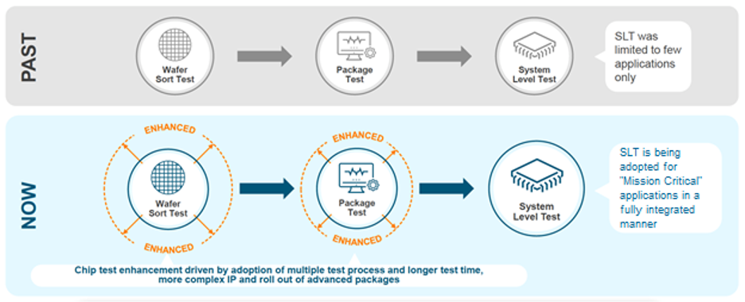
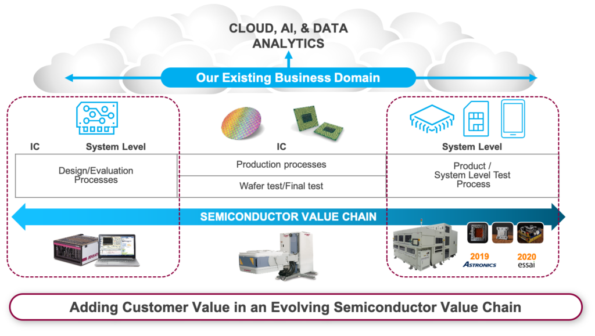
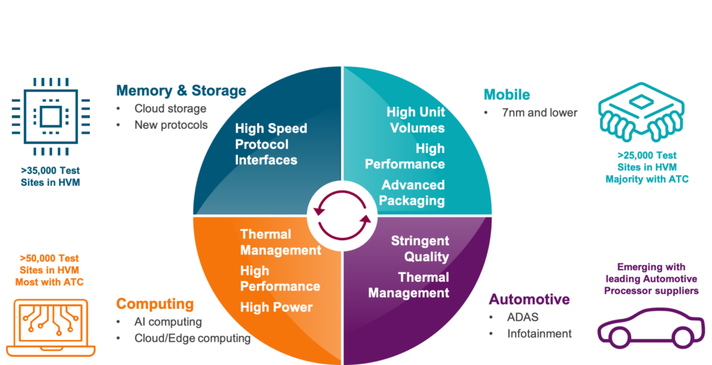
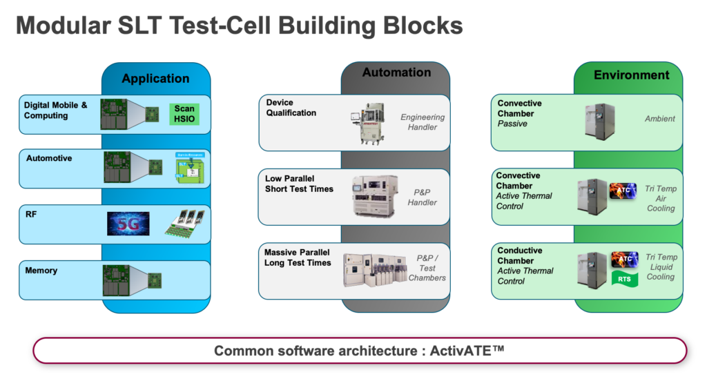
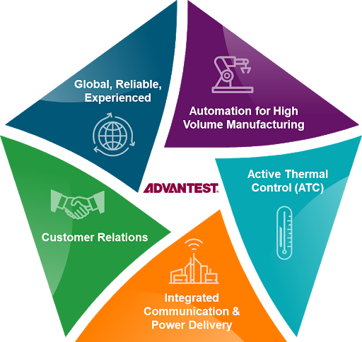

By Fabio Pizza, Business Development Manager, Advantest Europe
Note: System-level test (SLT) continues to expand in importance throughout the industry. In past newsletters, we have published articles looking at the company’s efforts in this space, primarily for the storage market, as it offered the most immediate opportunity for implementing SLT. Now, rising industry demand, driven by mission-critical applications, has put SLT at the forefront for Advantest company-wide.
Because electronic systems for all applications in end-user markets must provide the highest possible reliability to match customers’ quality expectations, semiconductor components undergo multiple tests and stress steps to screen out defects that could arise during their lifecycle. Due to new semiconductor devices’ increasing design complexity and extreme process technology, increased test coverage is needed to meet stricter quality requirements.
To solve this problem, system-level test that mimics a device’s real-world operating conditions is increasingly being adopted as one of the final steps in the production testing process for complex systems-on-chip (SoCs). In the past, system manufacturers typically implemented SLT on a sample basis, plugging devices into systems to check that the devices would function in an application. Semiconductor companies have now adopted SLT methodology throughout the test process to increase test coverage and product quality for mission-critical applications (Figure 1).
Figure 1. Advanced technology is driving changes in test requirements, creating the need for integrated SLT approaches throughout the test flow.
Advantest provides customers with an end-to-end test solution, from ATE to SLT, in line with the company’s Grand Design, created to ensure that Advantest remains at the forefront of our industry. The central vision of this corporate-wide plan is for Advantest to strengthen its contributions to customer value in the semiconductor business by enriching, expanding and integrating our test and measurement solutions throughout the entire value chain, as shown in Figure 2.
Figure 2. System-level test is crucial to the mission of Advantest’s Grand Design – “Adding Customer Value in an Evolving Semiconductor Value Chain.”
Recent market and financial analyst commentary supports Advantest’s view that SLT is the way of the future and that our expertise in this area provides new growth opportunities. Following our briefing on SLT in June, VLSI Research CEO Dan Hutcheson wrote in the July Chip Insider newsletter that the session prompted him to think that SLT “may well be the next major revolution in test equipment…The essential argument is that test is becoming a more important enabler going forward versus its decades-long position as a cost center to be pushed down. What has changed is the increasing complexity of SoCs and SiPs, the introduction of advanced packaging, chiplets and high-bandwidth memory.”
A July report issued by Mitsubishi UFJ Morgan Stanley Securities noted, “Recently, we have seen an increase in demand for the testing of semiconductor devices at the system level, in addition to the wafer and package levels, as temperature and voltage fluctuations place them under severe stress when they are used in applications such as data center servers. There is similar testing demand from the makers of storage and mobile devices and automotive systems, and we believe this will provide a fresh source of growth for Advantest.”
The mega-markets shown in Figure 3 represent mission-critical applications for SLT. Advantest has established itself as a leader in SLT solutions for the computing, memory and storage, and mobile markets, with systems in production performing massively parallel SLT for these applications, and we continue to sustain and grow our leadership in these areas. The automotive space is a new domain where we are now focused on expanding our SLT business.
Figure 3. Memory & storage, computing, mobile and automotive markets are the four mega-markets driving system-level test.
We are already working with leading customers in Europe, the U.S. and Japan who are seeking automotive SLT solutions, primarily for advanced driver-assistance systems (ADAS) and infotainment. One customer developing automotive microcontrollers is experiencing some returns from the field that were not detected in the standard traditional final test steps. They must expand test coverage to close these gaps. Unlike with mobile phones, one failure per million devices can be disastrous or even deadly in the automotive space, so chipmakers must be able to ensure the quality of their devices when installed. Quality over time is particularly important, as the final product lifetime can be 10 years or more.
**Advantest’s SLT capabilities **
Advantest SLT test cells are based on modular building blocks, as shown in Figure 4. The first step involves collaborating with the customer to develop a customized application board to ensure accurate reproduction of the system environment’s conditions while optimizing for high volume production. Next comes automation, the degree of which differs, depending on target production test time and required parallelism. High-volume devices require a much greater amount of parallel testing to meet cost-of-test objectives.
Figure 4. Advantest’s SLT approach involves modular test-cell building blocks.
The third piece is the thermal environment, which depends on device power and test stress requirements. As the figure indicates, Advantest offers a range of thermal-control technologies: pure passive ambient, tri-temperature active thermal control (ATC) with air cooling, and tri-temp ATC with liquid cooling using rapid temperature switching methods (RTS). Devices are tested independently at controlled temperature. As newer-generation devices tend to consume high power, each needs its own thermal controller and sensors to ensure stable test temperature and prevent device failure. Examples include HPC devices, which can consume over 300W each. ADAS applications require a great deal of power to process data generated by vehicle cameras. When tested, these automotive processors must be heated up without exceeding the maximum junction temperature of 125-130 degrees.
Our SLT solutions also share a common software framework called ActivATE™, which enables test programs to be reused easily. ActivATE™ comprises an integrated development environment (IDE), a test sequencer, and a device manager, and allows test engineers to rapidly create and deploy test programs using standard programming languages.
These building blocks have been assembled by combining our existing proven SLT offerings with some strategic acquisitions. In late 2018, the semiconductor test division of Astronics became part of Advantest, adding massive parallel test solutions to our arsenal. Parallel testing is essential for minimizing the cost of test for SLT, as is mitigating handling limitations of pick-and-place technology. Astronics developed systems with slots that can test hundreds of devices in parallel with virtually 100-percent multi-site test efficiency.
This is a must-have for high-volume manufacturing of mobile and high-performance computing (HPC) products. While automotive volumes are not as high, the electronics in cars are increasing, so here, the requirement is covering multiple variations of devices – i.e. a main design with some customization. This requires the ability to test more small lots with diversified packages and variations of a main device family, and we can now handle these different packages and fully parallel-test them in one system.
Exemplifying our building-block approach, we developed in less than one year the 5047, our dedicated SLT test cell consisting of our standard M4841 logic handler docked to a 547 SLT system to perform SLT for lower-volume automotive devices with limited parallelism requirements (x8 or x16). These devices run at low power with short test times (tens of seconds to a few minutes), so the standard pick-and-place handler can cover them satisfactorily. Its tri-temperature thermal environment (-55 to +155°C) supports both hot and room temps; cold temps require some further design accommodation for condensation abatement.
This past January, we also acquired Essai, Inc., adding its test sockets and thermal-control units to our portfolio. The same macro trends pushing processors to higher speed, higher power and higher complexities demand that our SLT platform be tightly integrated with the socket design. We are currently integrating Essai’s offerings into our end-to-end solutions and will soon be able to offer SLT test cells with socket-accuracy and performance assurance.
Figure 5. Advantest is uniquely qualified to provide all aspects required for high-volume SLT.
As SLT demand becomes more widespread, it is an exciting time to be part of the test industry. As Figure 5 depicts, Advantest is uniquely situated to provide our valued customers SLT cells with the right communication protocols, power, automation, active thermal control and worldwide service and support. We look forward to continuing to share our progress in further building this already-vital part of Advantest’s business.



